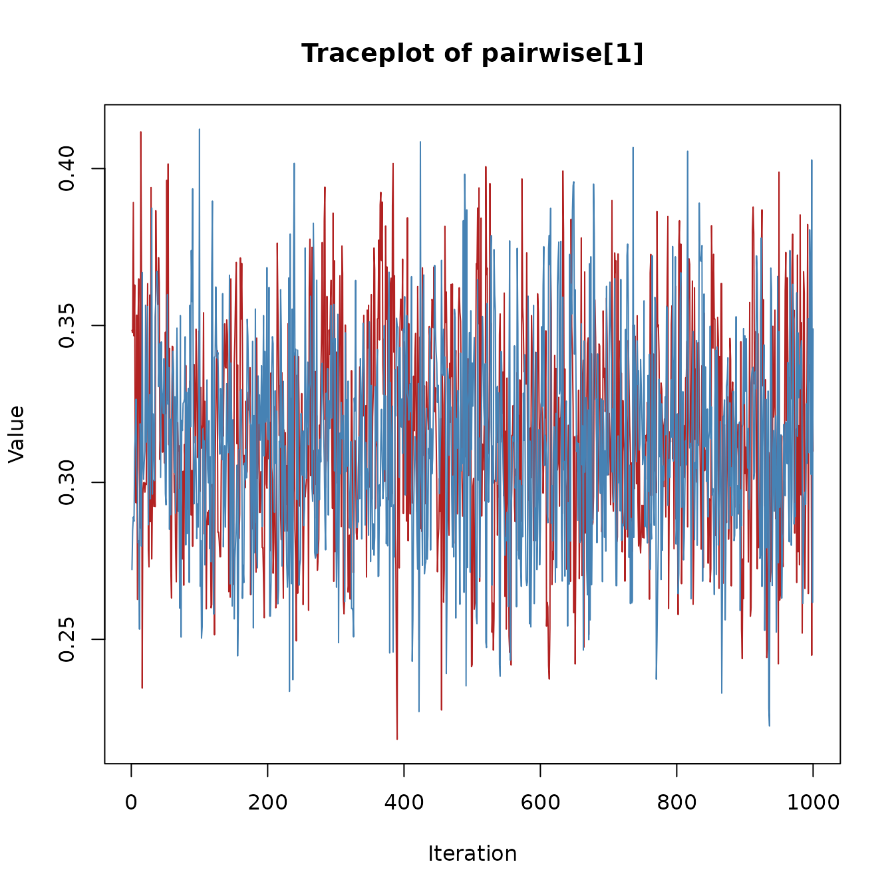

Introduction
This vignette illustrates how to inspect convergence diagnostics and how to interpret spike-and-slab summaries in bgms models. For some of the model variables spike-and-slab priors introduce binary indicator variables that govern whether the effect is included or not. Their posterior distributions can be summarized with inclusion probabilities and Bayes factors.
Convergence diagnostics
The quality of the Markov chain can be assessed with common MCMC diagnostics:
summary(fit)$pairwise
#> mean mcse sd n_eff
#> intrusion-dreams 0.314546956 0.0009366491 0.03367634 1292.6949
#> intrusion-flash 0.169225721 0.0008848512 0.03237316 1338.5346
#> intrusion-upset 0.099074309 0.0022326916 0.03308388 265.8067
#> intrusion-physior 0.097572257 0.0046528391 0.03523805 458.6536
#> dreams-flash 0.250679559 0.0008157764 0.03079276 1424.8038
#> dreams-upset 0.114415461 0.0009296699 0.02758721 885.7764
#> dreams-physior 0.003597214 0.0006512379 0.01253777 258.0651
#> flash-upset 0.003919395 0.0010121435 0.01312663 203.1520
#> flash-physior 0.154130991 0.0007836221 0.02766581 1246.4464
#> upset-physior 0.354342035 0.0009159979 0.03158497 1188.9731
#> n_eff_mixt Rhat
#> intrusion-dreams NA 1.002533
#> intrusion-flash NA 1.001224
#> intrusion-upset 219.57117 1.038048
#> intrusion-physior 57.35716 1.076425
#> dreams-flash NA 1.005227
#> dreams-upset 880.55809 1.004976
#> dreams-physior 370.64773 1.057157
#> flash-upset 168.19859 1.013073
#> flash-physior NA 1.004678
#> upset-physior NA 1.006686- R-hat values close to 1 (typically below 1.01) suggest convergence (Vehtari et al., 2021).
- The effective sample size (ESS) reflects the number of independent samples that would provide equivalent precision. Larger ESS values indicate more reliable estimates.
- The Monte Carlo standard error (MCSE) measures the additional variability introduced by using a finite number of MCMC draws. A small MCSE relative to the posterior standard deviation indicates stable estimates, whereas a large MCSE suggests that more samples are needed.
Two ESS measures for edge-selected parameters
With edge or difference selection active, the effect parameters are governed by spike-and-slab priors. The corresponding parameter is set to exactly zero when the effect is excluded, rather than being removed from the model. Because the parameter has a well-defined value at every iteration, the full chain — including zeros — is a valid sequence for computing ESS.
- n_eff is the unconditional ESS, computed from the full effect chain. It measures how precisely the overall posterior mean is estimated.
-
n_eff_mixt is the mixture ESS. It measures how
precisely the posterior mean of the effect is estimated while accounting
for the additional uncertainty introduced by the spike-and-slab
selection. When the indicator rarely switches between inclusion and
exclusion (fewer than 5 transitions),
n_eff_mixtis suppressed in the printed output.
Traceplots
Users can inspect traceplots by extracting raw samples directly. Here is an example for the pairwise effect parameter.
param_index = 1
chains = fit$raw_samples$pairwise
nchains = length(chains)
cols = c("firebrick", "steelblue", "darkgreen", "goldenrod")
plot(chains[[1]][, param_index],
type = "l", col = cols[1],
xlab = "Iteration", ylab = "Value",
main = "Traceplot of pairwise[1]",
ylim = range(sapply(chains, function(ch) range(ch[, param_index])))
)
if(nchains > 1) {
for(c in 2:nchains) {
lines(chains[[c]][, param_index], col = cols[c])
}
}
Spike-and-slab summaries
The spike-and-slab prior yields posterior inclusion probabilities for edges:
coef(fit)$indicator
#> intrusion dreams flash upset physior
#> intrusion 0.0000 1.000 1.0000 0.9685 0.953
#> dreams 1.0000 0.000 1.0000 0.9990 0.078
#> flash 1.0000 1.000 0.0000 0.0845 1.000
#> upset 0.9685 0.999 0.0845 0.0000 1.000
#> physior 0.9530 0.078 1.0000 1.0000 0.000- Values near 1.0: strong evidence the edge is present.
- Values near 0.0: strong evidence the edge is absent.
- Values near 0.5: inconclusive (absence of evidence).
Bayes factors
When the prior inclusion probability for an edge is equal to 0.5
(e.g., using a Bernoulli prior with
inclusion_probability = 0.5 or a symmetric Beta prior,
main_alpha = main_beta), we can directly transform
inclusion probabilities into Bayes factors for edge presence vs
absence:
# Example for one edge
p = coef(fit)$indicator[1, 5]
BF_10 = p / (1 - p)
BF_10
#> [1] 20.2766Here the Bayes factor in favor of inclusion (H1) is small, meaning that there is little evidence for inclusion. Since the Bayes factor is transitive, we can use it to express the evidence in favor of exclusion (H0) as
1 / BF_10
#> [1] 0.04931794This Bayes factor shows that there is strong evidence for the absence
of a network relation between the variables intrusion and
physior.
NUTS diagnostics
When using update_method = "nuts" (the default),
additional diagnostics are available to assess the quality of the
Hamiltonian Monte Carlo sampling. These can be accessed via
fit$nuts_diag:
fit$nuts_diag$summary
#> $total_divergences
#> [1] 0
#>
#> $max_tree_depth_hits
#> [1] 0
#>
#> $min_ebfmi
#> [1] 0.9552931
#>
#> $warmup_incomplete
#> [1] TRUEE-BFMI
E-BFMI (Energy Bayesian Fraction of Missing Information) measures how efficiently the sampler explores the posterior. It compares the typical size of energy changes between successive samples to the overall spread of energies. Values close to 1 indicate that the sampler moves freely across the energy landscape; values below 0.3 suggest the sampler may be getting stuck or that the chain has not yet settled into its stationary distribution.
A low E-BFMI does not necessarily mean your results are wrong, but it
does warrant further investigation. In models with edge selection, the
most common cause is that the warmup period was too short for the
discrete graph structure to equilibrate. Increasing warmup
often resolves this.
Divergent transitions
Divergent transitions occur when the numerical integrator encounters regions of the posterior where the curvature changes too rapidly for the current step size. A small number of divergences (say, fewer than 0.1% of samples) is generally acceptable. However, many divergences indicate that the sampler may be missing important parts of the posterior.
If you see a large number of divergences, consider increasing
target_accept (which makes the sampler use a smaller step
size) and, if this does not fix it, switching to
update_method = "adaptive-metropolis".
Tree depth
NUTS builds trajectories by repeatedly doubling their length until a
“U-turn” criterion is satisfied. If the trajectory frequently reaches
the maximum allowed depth (nuts_max_depth, default 10), it
suggests the sampler may benefit from longer trajectories to explore the
posterior efficiently. Hitting the maximum depth occasionally is normal;
hitting it on most iterations may indicate challenging posterior
geometry. If this happens, consider increasing
nuts_max_depth.
Warmup and equilibration
Standard HMC/NUTS warmup is designed to tune the step size and mass matrix for the continuous parameters. In models with edge selection, the discrete graph structure may take longer to reach its stationary distribution than the continuous parameters. As a result, even after warmup completes, the first portion of the sampling phase may still show transient behavior (i.e., non-stationarity).
The warmup_check component provides simple diagnostics
that compare the first and second halves of the post-warmup samples:
fit$nuts_diag$warmup_check
#> $warmup_incomplete
#> [1] FALSE TRUE
#>
#> $energy_slope
#> time_idx time_idx
#> 0.0008165213 -0.0021298856
#>
#> $slope_significant
#> time_idx time_idx
#> FALSE TRUE
#>
#> $ebfmi_first_half
#> [1] 0.8905554 0.9066528
#>
#> $ebfmi_second_half
#> [1] 1.036465 1.138790
#>
#> $var_ratio
#> [1] 1.180541 1.089849The returned list contains the following fields (one value per chain):
-
warmup_incomplete: A logical flag that is
TRUEwhen any of the indicators below suggest the chain may not have reached stationarity. - energy_slope: The slope of a linear regression of energy against iteration number. A slope near zero indicates stable energy; a significant negative slope suggests the chain is still drifting toward higher-probability regions.
-
slope_significant:
TRUEif the energy slope is statistically significant (p < 0.01). - ebfmi_first_half and ebfmi_second_half: E-BFMI computed separately for the first and second halves of the post-warmup samples. If the first-half value is much lower (for example, below 0.3) while the second-half value is healthy, the early samples were likely still settling.
- var_ratio: The ratio of energy variance in the first half to that in the second half. A ratio much greater than 1 (for example, above 2) indicates higher variability early on, consistent with transient behavior.
If these diagnostics suggest the chain was still settling, increase
warmup and re-run the model. If diagnostics remain
problematic after a substantial increase (for example, doubling or
tripling warmup), consider re-fitting with
update_method = "adaptive-metropolis" and comparing the
posterior summaries. If the two samplers produce similar results, the
estimates are likely trustworthy despite the warnings; if they differ
substantially, that warrants further investigation of the model or
data.
Next steps
- See Getting Started for a simple one-sample workflow.
- See Model Comparison for group differences.